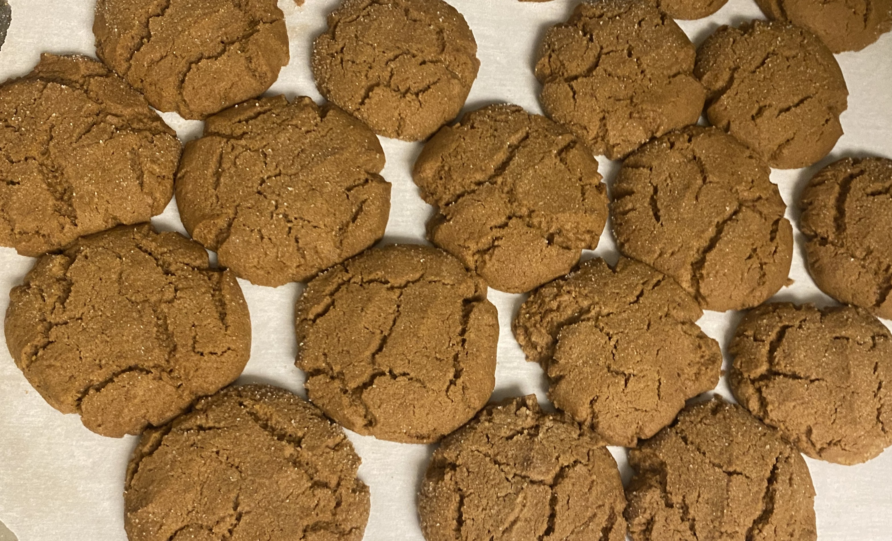

Ingredients
- 1 cup vegan butter, softened
- 1 cup packed brown sugar
- 1/2 cup molasses
- 1 tbsp vanilla
- 3 1/4 cups all purpose flour
- 1/2 tsp salt
- 1 tbsp baking soda
- 1 tbsp ground ginger
- 1 tbsp cinnamon
- 1/2 tsp nutmeg
- 1/2 cup sugar, for rolling (optional)
Instructions
- Preheat the oven to 350 degrees F. Line two baking sheets with parchment paper.
- With a hand mixer, beat the butter and brown sugar until creamy; follow with the molasses and vanilla.
- Add 2 cups of flour, then sprinkle with the baking soda, salt, ginger, cinnamon, and nutmeg. Mix on low speed to combine. Fold in the remaining flour.
- Roll the dough into cookie dough balls and optionally roll in sugar before placing on pan.
- Bake for 11-12 minutes, until they begin to crack on top. Let cool for 10-15 minutes, then enjoy!